POO · curso 2
4. Herencia · POO
Escrito por Adrián Quiroga Linares.
4.1 Concepto de Herencia
La herencia es el mecanismo por el cual una clase derivada reutiliza los atributos y métodos de una clase base o superior. Una clase derivada se considera una extensión de la clase base. Sus métodos y atributos son:
- Aquellos heredados de la clase base, que son copiados implícitamente. Los constructores de la clase base no se heredan, ya que se consideran específicos a ella.
- Aquellos definidos explícitamente como propios de la clase derivada. Se dice que hay una relación del tipo "es un/a entre una clase derivada y una clase base
4.1.1 Tipos de Herencia
- Herencia simple: la clase
hereda los atributos y métodos de la clase - Herencia multinivel: la clase
hereda los atributos y métodos de la clase que, a su vez, hereda los atributos y métodos de la clase . Por tanto, hereda también los atributos y métodos de la clase - Herencia jerárquica: las clases
y heredan los atributos y métodos de la clase , de modo que se diferencian por sus atributos y métodos propios. - Herencia múltiple: la clase
hereda los atributos y métodos de las clases y , por lo que hará falta definir políticas de herencia si y tienen métodos comunes.
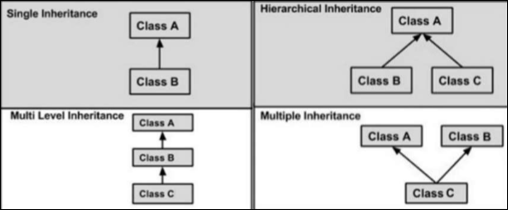
4.1.2 Beneficios de la Herencia
El principal beneficio es la reutilización de código, pues un segmento de código que ya ha sido desarrollado, depurado y validado en una clase se usa en otro sin tener que cambiarlo. Esto simplifica el código, porque evita tener que implementar varias veces el mismo método.
En principio, facilita el mantenimiento de los programas, porque el cambio o reparación de los métodos se realiza sólo en las clases base, y no en todas las que los usan. En principio, facilita la extensibilidad de los programas, porque permite construir nuevas clases directamente a partir de otras que ya existían, en vez de empezar de cero.
4.1.3 Desventajas de la Herencia
Puede ir en contra del concepto de de encapsulación, pues para facilitar su uso, se puede precisar que los atributos tengan un modificador de acceso diferente al privado. Puede complicar el mantenimiento de los programas, pues los cambios en las clases base tienen un impacto en las derivadas, por lo que estos cambios podrían ser inconsistentes con el código específico de las clases derivadas Puede dificultas la extensibilidad de los programas cuando la jerarquización es muy profunda, pues el código será mucho más difícil de entender ya que las relaciones entre clases serán complicadas y será difícil identificar a qué clase pertenece cada método.
4.2 Concepto de composición
La composición es el mecanismo por el cual una clase contiene objetos de otras clases, a los que se les delegan ciertas operaciones para conseguir la funcionalidad buscada. Se dice que hay una relación del tipo "tiene un/a" (o "tiene los atributos de un/a") entre las clases que participan en una composición.
4.2.1 Beneficios de la Composición
- El principal beneficio es la repartición de responsabilidades entre objetos, pues cada uno se encarga de realizar determinadas operaciones, que después podrán invocar otros.
- Facilita el mantenimiento de los programas, pues las clases están más desacopladas entre sí, por lo que no comparten métodos, así que es poco probable que cambiar algo en una clase cree una inconsistencia en otra.
- Facilita la extensibilidad de los programas, pues permite implementar funcionalidad en clases usando otras que ya existían.
4.2.2 Desventajas de usar Composición
- Genera mucho más código y mucho más complejo para hacer lo mismo que consigue la herencia.
- Es más lento de desarrollar que la herencia, pues la construcción de nuevas clases se realiza desde cero.
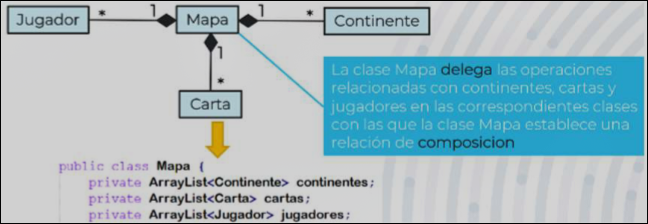
4.3 Herencia contra Composición
Debemos escoger composición sobre herencia cuando:
- Las clases no están relacionadas lógicamente: la herencia no tendría sentido
- La clase base tendría una única derivada: la herencia no tendría sentido
- Las clases derivadas heredarían código no necesario: la herencia no tendría sentido
- Existe la posibilidad de que las clases base cambien: la herencia complicaría el desarrollo
- Las clases derivadas tendrían que sobreescribir muchos métodos: la herencia complicaría el desarrollo.
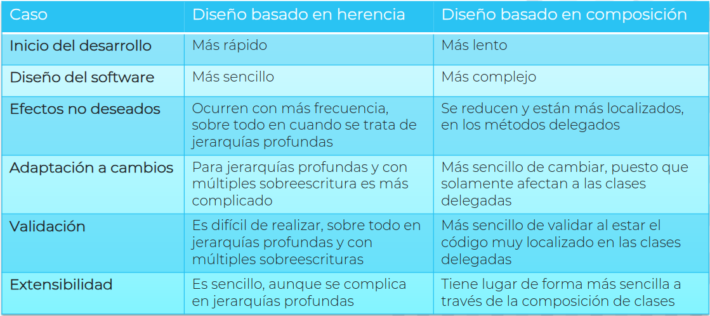
4.3 Herencia en Java
En java se imponen restricciones sobre la herencia:
- No existe herencia múltiple
- Los atributos y métodos se heredan en función del tipo de acceso que tengan en la clase.
4.3.1 Revisitando el tipo de Acceso
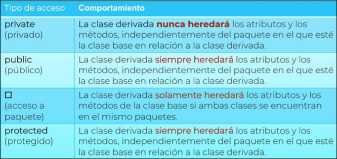
- `private:` la clase derivada **nunca hereda** el atributo/método - `public:` la clase derivada **siempre hereda** el atributo/método - `acceso a paquete:` la clase derivada **solo hereda** el atributo/método si se encuentra en el **mismo paquete** que la clase base - `protected:` la clase derivada **siempre hereda** el atributo/métodoComo los atributos privados no se heredan, se podrían hacer públicos o protegidos. Esto eliminaría (si son públicos) o debilitaría (si son protegidos) la encapsulación. Por tanto, los atributos se mantienen privados, ya que se considera que la encapsulación tiene más beneficios que la herencia:
- Sin encapsulación, el desarrollo, mantenimiento y validación de los programas sería mucho más difícil.
- Sin encapsulación, la composición no tiene sentido.
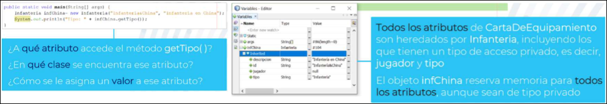
[!Buenas Prácticas]
- Los atributos son siempre privados, aunque se use herencia
- En una jerarquía de clases, se debería implementar los métodos de la clase donde se definen los atributos que usan, y no en sus derivadas.
Entonces, la clase derivada no hereda los atributos ni los métodos privados, pero sí los métodos públicos, lo cual suscita ciertas preguntas:
- ¿Cómo va a ejecutar los métodos heredados si no hereda los atributos que usan?
- En realidad, la clase derivada hereda todos los atributos de la clase, independientemente de su tipo de acceso.
- El tipo de acceso de un atributos especifica su nivel de visibildad. Por tanto, los atributos privados se heredan, pero no se puede acceder a ellos directamente, si no que para ello se usan métodos.
- ¿ Cómo va a ejecutar los métodos heredados si no heredo los métodos que usan?
- Igual que para los atributos, en realizada la clase derivada hereda todos los métodos, independientemente del tipo de acceso.
- El tipo de acceso de un método especifica su nivel de visibilidad. Por tanto, los métodos privados se heredan, pero no se puede acceder a ellos directamente, si no que para ellos se usan los métodos heredados.
4.3.2 Constructores
Como se dijo antes, los constructores de la clase no se heredan, ya que se consideran específicos a ella. Los constructores de una clase reservan memoria e inicializan los atributos de esa clase, pero el constructor de la clase base no tiene acceso a los atributos de la derivada. Por tanto, si se pudiesen heredar los constructores de la clase base, no se podrían invocar para crear objetos de la clase derivada.
¿Cómo consiguen los constructores de la clase derivada reservar memoria e inicializar los atributos privados de la clase base?
- En los constructores de la clase derivada sin argumentos:
- Al invocarlos, se invoca automáticamente al constructor sin argumentos de la clase base.
- Por tanto, la clase base debe tener obligatoriamente un constructor sin argumentos. En caso contrario, se generará un error de compilación.
- Si la clase base tiene algún constructor explícito, uno de ellos tendrá que ser sin argumentos.
- Si la clase base no tiene ningún constructor explícito, el constructor por defecto es suficiente.
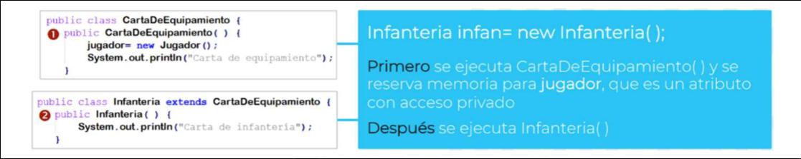
- En los constructores de la clase derivada con argumentos:
- No se invoca automáticamente a ningún constructor de la clase base, ya que no se puede garantizar que exista alguno con los mismos argumentos.
- Por tanto, habrá que invocar manualmente el constructor de la clase base que se considere oportuno. Para poder hacer esto necesitamos
super(args), que es un método que nos permite acceder desde la clase derivada a los atributos, métodos y constructores de la clase base que tengan cierto nivel de visibilidad.super(args)sólo nos permite acceder a los elementos de la clase base inmediatamente superior a la clase derivada donde se invoca.
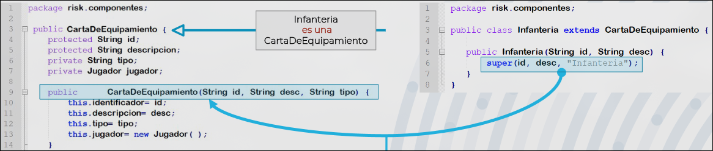
Java debe crear un objeto completo de tipo Infanteria, pero ese objeto también es, internamente, un objeto de tipo CartaDeEquipamiento (su clase base).
- Reserva toda la memoria para el objeto completo (Infanteria + lo heredado de CartaDeEquipamiento).
- Inicializa primero la parte de la clase base (CartaDeEquipamiento):
- Esto incluye inicializar todos los atributos definidos en la clase base.
- Para eso, se llama primero al constructor de la clase base.
- Luego ejecuta el constructor de la subclase (Infanteria):
- Ahora puede inicializar los atributos y comportamientos propios de la subclase.
Necesidad de construir desde lo más general a lo más específico: - La subclase depende de que la clase base esté correctamente inicializada (por ejemplo, que los atributos privados de la base estén listos).
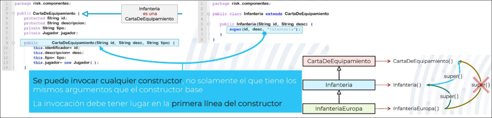
4.4 Sobreescritura de Métodos
La sobreescritura de métodos es un mecanismo mediante el cual un método heredado de una clase base vuelve a ser implementado de manera distinta en la clase derivada. Para sobrescribir un método, se usa la palabra clave @Override sobre la reimplementación en la clase derivada.
- El nombre del método, sus argumentos y el tipo que devuelve deben ser los mismos en la clase base y en la derivada.
- El tipo de acceso del método en la clase derivada debe ser igual o superior al que tiene en la clase base.
- Un método se sobrescribe cuando la implementación de la clase base no es válida para la derivada o es conveniente adaptar la implementación de la clase base a las características específicas de la derivada.
Se puede aprovechar la implementación original de un método en su sobreescritura usando super(). Al llamar al método super() en la sobreescritura en la clase derivada, se invoca la implementación de la clase base del método que se está sobreescribiendo. Se usa super() y no se invoca directamente el método pues la clase derivada no sabría distinguir si nos referimos a la sobreescritura o la implementación de la clase base.
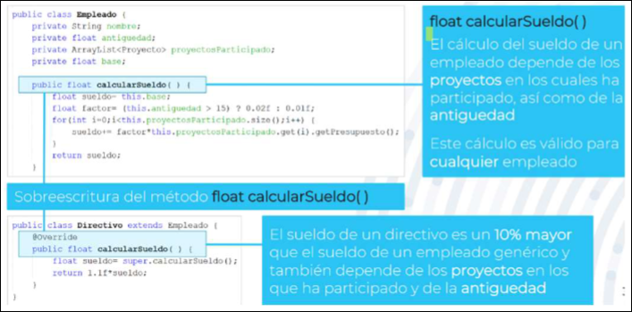
Todas las clases creadas en Java son derivadas de Object, por lo que heredan todos sus métodos:
getClass:indica la clase a la que pertenece el objeto que lo invocanotifyywait:orientados a la gestión de los hilosfinalize:se invoca cuando el recolector de basura elimina el objeto de la memoria del programa. Es necesario sobreescribirlo.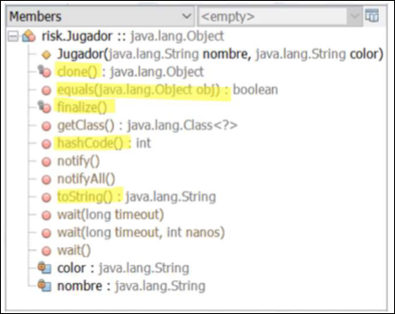
4.5 Clases Abstractas
Las clase abstractas son clases que no se pueden instanciar.
- Pueden tener constructores. No se pueden invocar a través de
new, sólo se pueden invocar mediantesuper()desde una clase derivada - Pueden tener atributos
- Pueden tener métodos implementados y métodos abstractos Una clase debería ser abstracta cuando no es necesario que tenga objetos pues todos los objetos pertenecen a cualquiera de las otras clases de la jerarquía
Se suelen usar como clases base de otras clases que sí son instanciables, ocupando los primeros niveles de la jerarquía de clases. Por tanto, deben tener implementados la mayor cantidad posible de métodos para que las clases derivadas puedan heredarlos y así favorecer la reutilización de código.
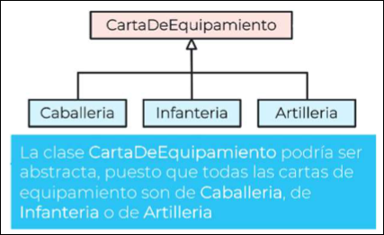
Una clase abstracta:
- Puede tener atributos de cualquier tipo
- Puede tener todos los métodos implementados
- Puede tener todos los métodos abstractos, debería tener tantos métodos implementados como sea posible
- Si todos sus métodos son abstractos, el enfoque del diseño será que todas sus derivadas tengan los mismo métodos que ella. Así las clases son más independientes, lo que facilita el mantenimiento y la extensibilidad del programa
- Si implementa tantos métodos como sea posible, el enfoque del diseño, será la reutilización de código.
- Puede no tener constructores, debería tener tantos constructores como sea necesario.
- Puede ocupar cualquier lugar de la jerarquía de clases, debería ocupar los niveles superiores
- Puede ser una derivada de una clase no abstracta, debería ser derivada de otra clase abstracta
Nota
Si tenemos una clase abstracta con métodos abstractos que hereda de otra clase abstracta con métodos abstractos, no hace falta escribir de nuevo los métodos abstractos en la derivada a no ser que queramos especificar su comportamiento ahí.
4.5.1 Métodos abstractos
Los métodos abstractos son métodos que no tienen cuerpo, es decir, no están implementados. Sólamente se especifica su nombre, el tipo de datos que devuelve y sus argumentos.
public abstract tipo_dato nombre_metodo(tipo_dato2 arg);
Todas las clases que contengan métodos abstractos son clases abstractas.
Los métodos abstractos tienen que estar implementados en todas las clases derivadas de la clase abstracta a la que pertenecen siempre que estas no sean abstractas.
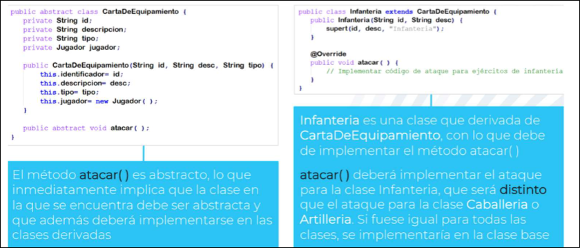
4.6 Clases, Atributos y Métodos Finales
Las clases finales son clases a partir de las cuales no se pueden crear clases derivadas, es decir, son los últimos nodos de la jerarquía de clases. Una clase debería ser final si se puede garantizar que no será necesario crear clases derivadas de ella.
Los métodos finales son métodos que no se pueden sobreescribir. Un método debería ser final si se puede garantizar que no será necesario realizar modificaciones sobre él en las clases derivadas de la clase donde se implementa.
Los atributos finales son atributos cuyo valor, una vez establecido, no se puede modificar. No tienen setters. Se usan para implementar constantes de los programas.
public final static tipo_dato nombre_atributo=valor;
nombre_clase.nombre_atributo
Se suelen definir en clases abstractas accesibles por todas las clases que las usan
Se suelen establecer como static para poder usarlas sin tener que crear un objeto de la clase en la que están definidas. La palabra clave static para atributos o métodos hace que se almacenen en la memoria estática, permitiendo que estén disponibles desde el inicio del programa sin tener que instanciar su clase.
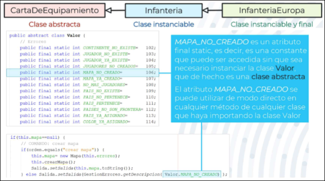
Importante
Qué se hereda?? Los atributos y métodos independientemente de su tipo de acceso (esto solo afecta a su nivel de visibilidad). Incluyendo los final. Qué no se hereda?? Los métodos y atributos static en una interfaz o en clases. (Manolo Lama Said)